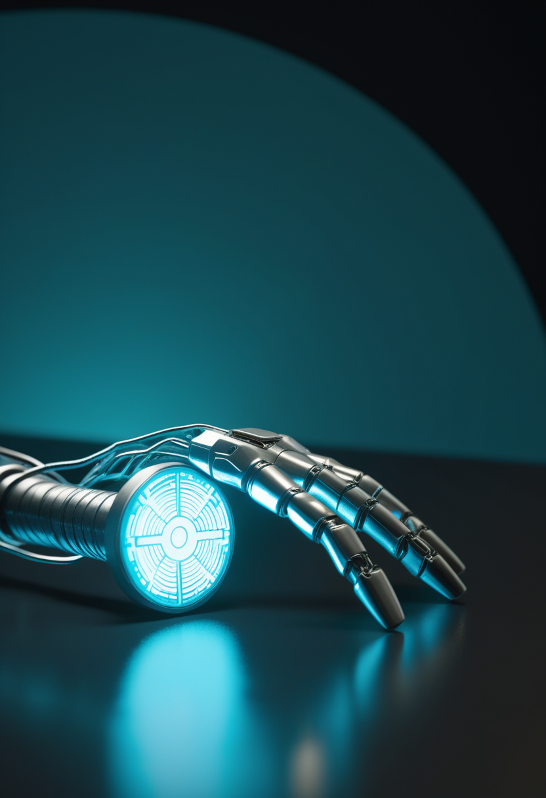
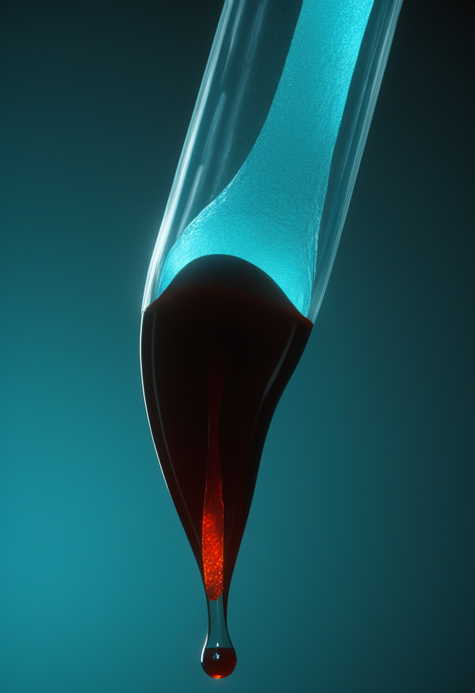
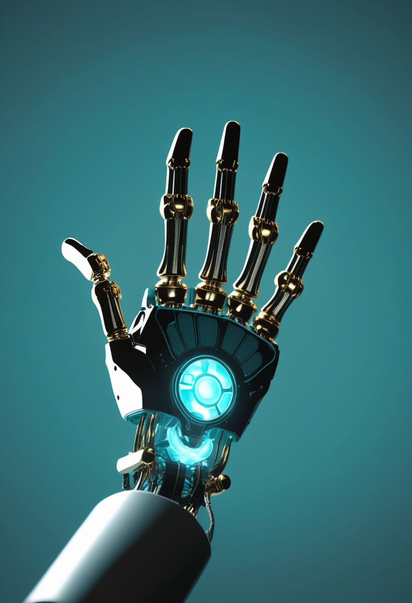
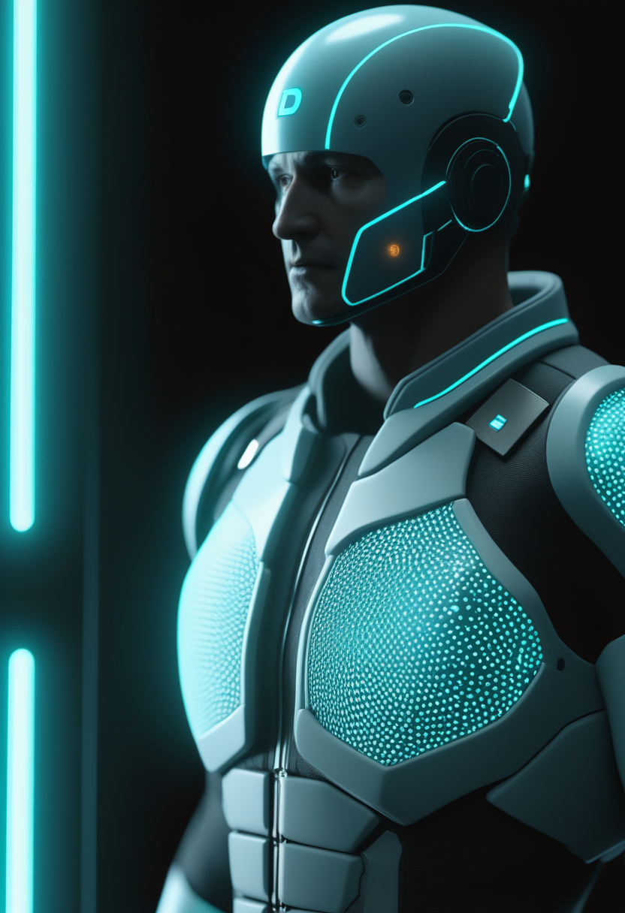
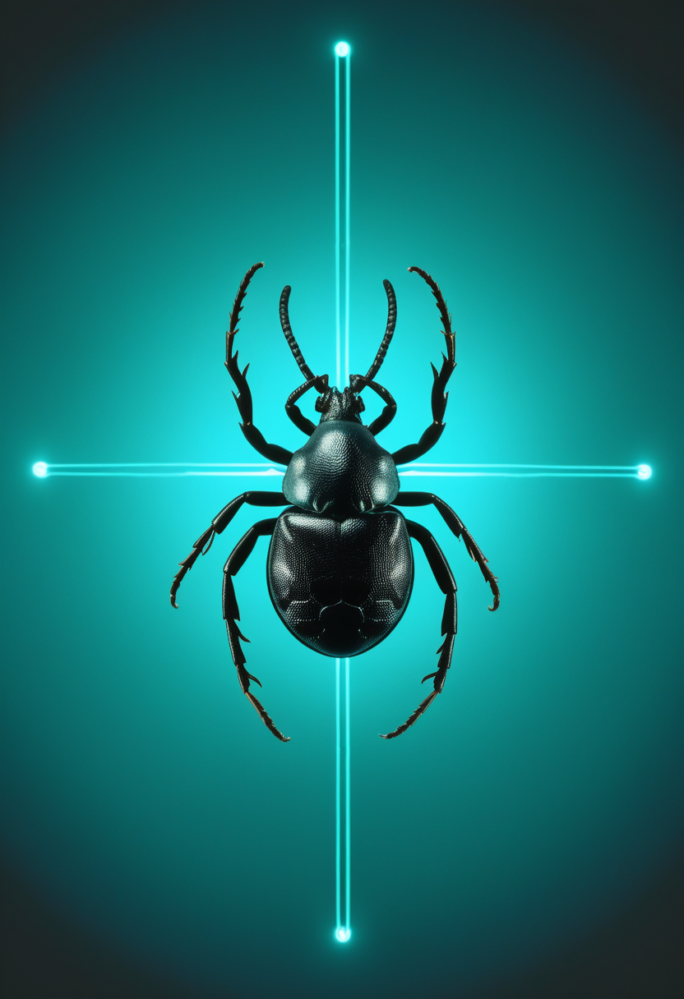
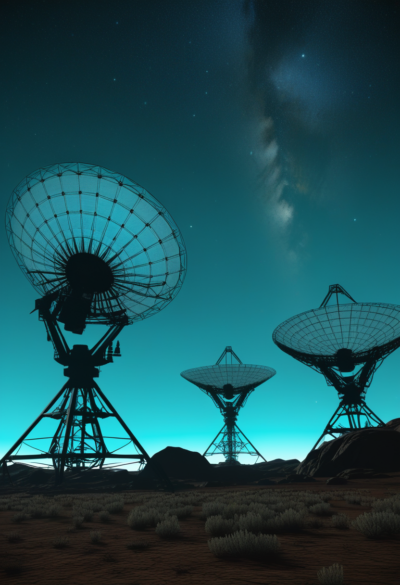
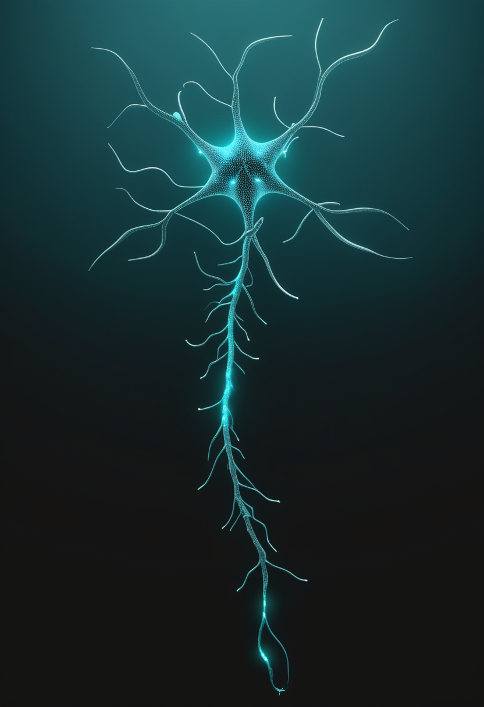

水曜日の便り。上海の華山医院で7月20日、中国Neuracle社製BCI「NEO」による世界初とされる商用ブレイン・コンピュータ・インターフェース埋め込み手術が実施され、脊髄損傷から10年を経た患者が思考だけでロボットグローブを操作した。米国ではParadromics社の無線BCI「Connexus」がミシガン大学で臨床試験を継続し、ロックトイン症候群患者が毎分60語相当で意思疎通できたと報告されている。公衆衛生の分野では、DRCのエボラが確定2,423例・死者967例に達する一方、WHOが流行宣言以来初めて「安定化」の兆しに言及した。スペインではクリミア・コンゴ出血熱の疑い例も報告されている。SMAの世界では、アピテグロマブの米FDA審査が9月30日の判定に向け進行中、Biogenの次世代薬サラネルセンはPhase 3が本格始動し、日本の新生児スクリーニングは公的助成のもとで運用が定着しつつある。宇宙では重力波カタログGWTC-5.0が過去最大の390件を記録し、中国の天問2号は小惑星カモオアレワへの到達を果たし、K2-18bを標的にした史上最大級のSETI探査も行われた。人間のデジタル化の分野では、AIの意識を巡る倫理シンポジウムが英国で開かれ、認知デジタルツインの統治枠組みを巡る論文も発表された。

上海の華山医院で7月20日、Neuracle社(中国)製の脳表面留置型BCI「NEO」による、世界初とされる商用ブレイン・コンピュータ・インターフェース埋め込み手術が実施された。10年前の脊髄損傷で右手を動かせなくなった患者に対し、大脳皮質表面に置く硬貨大・8電極のデバイスを移植し、思考だけでロボットグローブを操作することに成功した。NEOは今年3月に中国国家薬品監督管理局(NMPA)の承認を取得済みで、Neuralinkに先行する形での「商用第一号」樹立となる。低侵襲設計と承認から実装までわずか4か月というスピードが特徴だが、安全性の長期データは今後の蓄積が必要となる。
Scholar Rock社の筋肉標的型SMA治療薬アピテグロマブは、米FDAのBLA審査がPDUFA日である2026年9月30日に向け進行中。一方、EU側のCHMP意見の時期は、充填・仕上げ工程を担うCatalent Indiana施設(Novo Nordisk傘下)の4月査察結果をFDAがどう分類するかに左右される状況で、再分類が遅れれば意見表明も2026年後半にずれ込む可能性がある。同社は米国内の別施設への切り替えでEMAとの調整も並行して進めている。
Biogen社の抗センスオリゴヌクレオチド「サラネルセン」(SMN2遺伝子標的、年1回投与を想定)はFDAの画期的治療薬指定を取得済み。Phase 1bでは1年間の投与間隔でニューロフィラメント軽鎖(神経損傷マーカー)が70%減少し、WHO運動マイルストーンの改善も確認された。現在Phase 3として、無症候性乳児(生後6週未満)対象の「STELLAR-1」、15〜60歳の思春期・成人対象の「SOLAR」が患者登録中で、3本目の「STELLAR-2」も2026年6月に登録開始予定とされる。

日本マススクリーニング学会(JSMS)は5月25日付で、SMA・SCID(重症複合免疫不全症)・BCD(B細胞欠損症)を含む拡大新生児スクリーニングの実施状況を更新。これら3疾患は2024年4月から公的助成の対象となっており、生後4〜6日の血液(踵採血)からSMN1遺伝子の有無を調べ、約5日後に結果が通知される体制が全国的に定着しつつある。
アピテグロマブは規制上の「製造施設」問題、サラネルセンは治験デザインの多様化、日本は「制度の定着」段階と、SMA治療は薬剤ごと・地域ごとに異なるフェーズへ分散して進んでいる。

Neuracle社の「NEO」は大脳皮質表面に置く硬貨大・8電極のデバイスで、脊髄損傷から10年が経過し右手を動かせなくなった患者の運動野信号を読み取り、ロボットグローブを思考操作させることに成功した。NEOは今年3月にNMPA(中国国家薬品監督管理局)の承認を取得しており、「保険適用・患者への実装」までを4か月というスピードで達成した点が特徴。Neuralinkが目指す高密度・侵襲型と異なり、脳表面に留置する低侵襲設計を選んだことが商用化を早めたと分析されている。

2026年6月、ミシガン大学ヘルスの脳神経外科チームが、発話困難な患者を対象とした全米臨床試験の一環としてParadromics社の無線BCI「Connexus」を初めてヒトに埋め込んだ。同システムは6万5千個以上の電極を脳表面に沿わせて配置し、421本の微小電極が個々のニューロン信号を捕捉。胸部に埋め込んだ受信機経由で体外コンピューターへ無線伝送し、AIが発話・カーソル操作の意図に変換する。臨床試験データでは、ロックトイン症候群患者が毎分60語相当の速度で意思疎通できたと報告されている。
中国発の低侵襲・低コスト商用BCI(Neuracle)と、米国発の高密度・高機能BCI(Paradromics)が同時期に実用化の段階に入り、BCIは「実験段階」から「量産・保険適用・臨床拡大」の段階へ移りつつある。
新華社(7/21)によると、DRCのエボラ(ブンディブギョ型)は確定2,423例・死者967例に達し、新たにイトゥリ州の保健区「Adja」が加わり流行地域は計47保健区(5州)に拡大した。UN News(7/21)はWHO現地代表の「安定化しているとは言い切れないが、そう言えるかもしれない」との発言を伝え、5月15日の流行宣言以来初めて慎重な「安定化」の兆しに言及した。ただし46保健区で活動性感染が続き、人口移動・治安悪化・国境往来が封じ込めの妨げとなっている。

スペイン中部サラマンカ県で、マダニ刺咬歴のある高齢男性がCCHF(クリミア・コンゴ出血熱)に合致する症状で隔離治療を受けていると報じられた(確定診断・詳細な発表日は要確認)。同地域はシカ・イノシシなど宿主動物が多く、ウイルスを保有するダニの定着地として知られる。ECDCは2026年の季節性CCHFサーベイランスを実施中で、エボラ・マールブルグとは別系統の出血熱リスクが夏場のアウトブレイク監視に加わっている。
DRCエボラはWHOが初めて「安定化」の兆しに言及したが、数値は増え続けており評価はなお慎重。並行して報告されたスペインのCCHF疑い例は、フィロウイルス以外の出血熱リスクにも夏場の監視の目を向けさせる。
LIGO・Virgo・KAGRA(LVK)国際共同観測網は5月26日、最新の重力波カタログ「GWTC-5.0」を公表した。2024年4月〜2025年1月に検出されたデータを追加し、161件の新規ブラックホール合体候補を含む累計390件という過去最大規模の検出数に到達。中でもGW240615は発生源をわずか6平方度まで絞り込み、重力波源としては史上最高精度の位置特定を達成。複数のブラックホールが「合体を経て生まれた二世代目」である証拠も示された。
中国科学院系の天問2号探査機は、2025年5月29日の打ち上げから約400日・約10億kmの飛行を経て、地球の準衛星小惑星「2016HO3」(カモオアレワ)まで20km圏内に到達し、科学観測を開始したと新華社などが7月6日前後に報じた。6月6日に小惑星を初捕捉、6月19日に距離2,000kmまで接近するなど段階的に接近軌道を構築しており、日本のはやぶさ2による小惑星トリフネ探査と並び、日中の探査機が準衛星小惑星の起源解明に迫る取り組みが本格化している。

系外惑星K2-18b(124光年先、ハビタブルゾーン内でJWSTが二酸化炭素・メタンを検出済み)に対し、VLA(超大型干渉電波望遠鏡群)とMeerKATを組み合わせた異例の共同観測で狭帯域の技術文明シグナル探索が実施された。The Astronomical Journal(2026年)に発表された結果では、確定的な人工電波は検出されなかったものの、地球由来の混信を排除する高度なフィルタリング手法が確立され、今後のSETI探索を「より速く、より効果的」にする土台になったと評価されている。
重力波・小惑星探査・SETIという3つの異なる手法が、いずれも「観測精度の飛躍的向上」という共通テーマで今週そろって成果を出した。
7月2日、英サセックス大学でAISB(The Society for the Study of Artificial Intelligence and Simulation of Behaviour)2026年次大会の一部として「AI意識と倫理」シンポジウムが開催された。テーマはAI意識研究が「道徳的地位を持つ主体、あるいは道徳的配慮の対象」を生み出す可能性に関する倫理的論点。哲学者エリック・シュウィッツゲーベルは1月30日付arXiv論文で、現行AIは発達史・身体性を伴う環境相互作用・特定の神経化学的プロセスを欠くため意識の必要条件を満たさないと懐疑的立場を示す一方、他の研究者は「証拠が固まる前から念のため一定の保護を」と主張し、意見は割れている。
2026年6月付arXiv論文「Cognitive Digital Twins: Ethical Risks and Governance for AI Systems That Model the Mind」は、個人の認知・行動パターンを模倣する「認知デジタルツイン」について、なりすまし・同意なき人格再現・データ主権侵害などのリスクを整理し、開発段階からの倫理ガバナンス枠組みを提案した。人間のデジタルツインは「本人と偽物の境界」を曖昧にする点でメタバース上のバーチャルヒューマンと共通する倫理的課題を抱えると指摘している。

脳エミュレーション研究の進捗を追う報告によれば、線虫(C. elegans)の神経再構築コストは当初1ニューロンあたり約1万6,500ドルだったが、直近のゼブラフィッシュ幼生プロジェクトでは約100ドルまで低下。線虫では神経活動・身体力学・環境相互作用を統合した閉ループシミュレーションが基本的な行動を再現し始めている一方、ハエやゼブラフィッシュ規模への「完全なコネクトーム」拡張は進んだが、行動の完全再現にはなお課題が残る。意識転送(マインドアップロード)の実現は依然30〜40年先が科学的コンセンサスとされる。
「人間のデジタル化」は意識アップロードのような遠い将来像より先に、認知パターンを模す「デジタルツイン」の倫理ガバナンスという足元の課題が先行して制度化されつつある。
2026年7月22日、中国・上海で行われた世界初の商用BCI移植手術は、脳とコンピュータをつなぐ技術が「実験室」から「病院の手術室」へと着地したことを示す一日となった。同じ日、DRCのエボラはWHOが初めて「安定化」に慎重に言及したが、数字はなお増え続けている。見えない敵と向き合う医療と、失われた機能を取り戻す技術は、異なる速度で、しかし確かに前へ進んでいる。宇宙は今週も、重力波・小惑星・系外惑星という三つの窓からその広がりを見せてくれた。
では、また明日の朝に。 — JaH